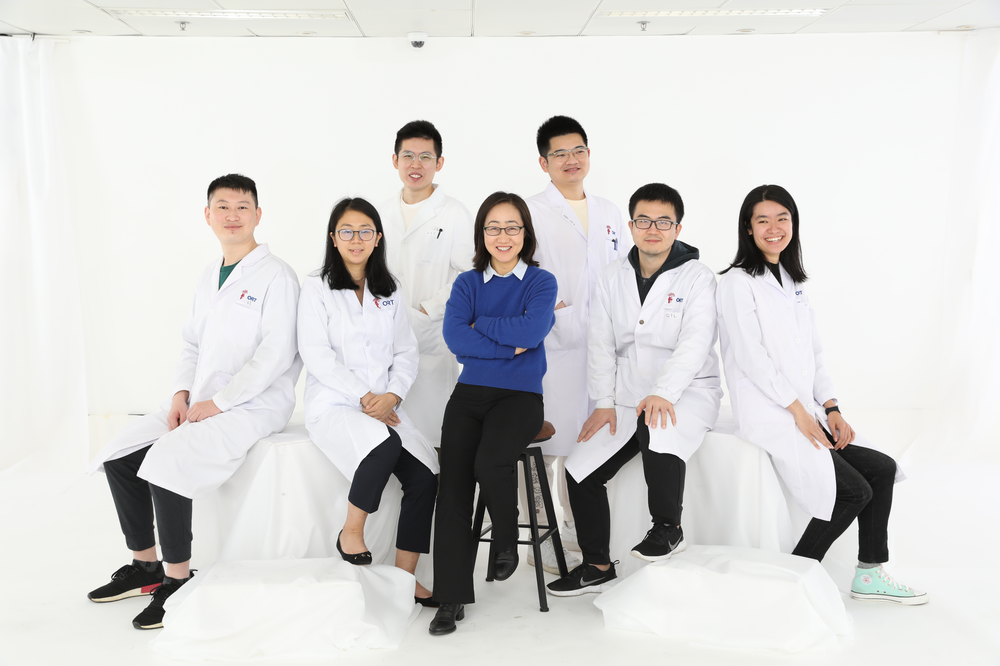

Skeletal muscle allows voluntary movement and plays a key role in regulating metabolism and homeostasis in the organism. Adult muscle stem cells, MuSCs, are responsible for muscle growth and regeneration. Responding to muscle injury, MuSCs are indispensable for the ensued regeneration by quickly activating to enter cell cycle, proliferate, and differentiate to form myofibers de novo. Both intrinsic factors in MuSCs and extrinsic signaling from the niche microenvironment regulate MuSC activities. Our group is interested in dissecting the mechanisms underlying the intrinsic and extrinsic regulations and also to elucidate how the deregulated MuSC activities contribute to muscle diseases such as age-inflicted sarcopenia and muscular dystrophy.
